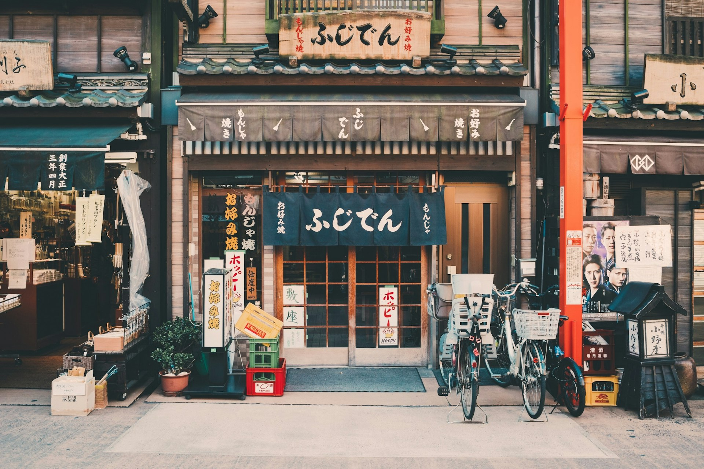
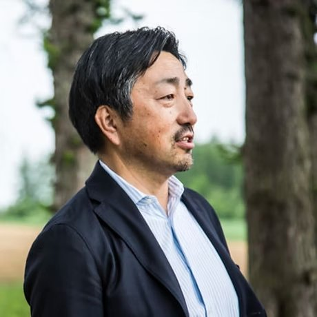
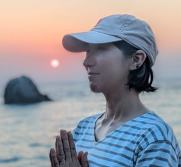
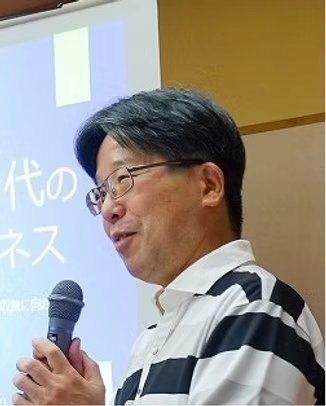

About Us
一般社団法人ナショナルパークスジャパン
Our Mission
日本が世界に誇るべき自然を有する各地の国立公園について、観光立国・地方創生の起爆剤としていくべく、国・地方自治体・経済界が一体となりオールジャパン体制のもと推進し世界へ発信していくべきとのビジョンのもと、活動してまいります。
私たちは、国立公園周辺への誘客推進による観光立国日本の実現と、我が国の景観を代表する国立公園の自然保護・維持のためのマネタイズスキーム（循環型モデル）の確立を目的として、関係省庁・地方自治体・民間企業と広く連携しながら、国立公園関連の先進的事業を推進するとともに、各種啓発活動・政策提言を行っております。
Organization
| 名称 | 一般社団法人ナショナルパークスジャパン |
|---|---|
| WEBサイト | https://nationalpark.love（旧WEB：nationalparks.jp） |
| 本店 | 〒088-3465 北海道川上郡弟子屈町川湯温泉2丁目2−6 阿寒摩周国立公園内 |
| 奄美群島支部 | 〒892-2601 鹿児島県大島郡瀬戸内町与路340 与路島ビジターセンターOleOle |
| 設立 | 2019年5月 |
| 代表理事 | 山内絢人（ファウンダー） |
| 副理事長 | 後藤健市 |
| 共同ファウンダー | 太田雅人 |
| 理事 | マイク・ハリス、藤田麻衣子 |
| 顧問 | 山崎俊巳 |
| 2019年5月 | 一般社団法人ナショナルパークスジャパン設立 |
| 2019年7月10日 | 環境省と阿寒摩周国立公園川湯エコミュージアムセンター（現・川湯ビジターセンター）における飲食物提供事業に関する協定を締結 |
| 2019年7月26日 | 環境省と国立公園オフィシャルパートナーシップを締結 |
| 2026年1月1日 | 国立公園オフィシャルパートナーシップ協定を更新 |
Leadership
Representative Director & Founder
1988年長野県飯田市生まれ。東京大学法学部卒。ロンドンビジネススクール・ファイナンス修士号、ケンブリッジ大学・企業法修士号取得。2011年財務省入省後、国際局・主計局を経て退職。「事業家として社会を良くできる」との信念で（株）Glocal Innovation Holdingsを創業。地域独自の魅力を掘り起こし、地方と世界を直接つなぐ「グローカル・イノベーター」として全国各地で活動。
Co-Founder
1965年大阪生まれ。関西学院大学経済学部卒。（株）GETTI代表取締役。1986年大学在学中に学生ビジネス集団を設立、NEC勤務後1992年に法人化。超大手企業のブランディング・マーケティングに加え、大学法人・都道府県・省庁へのコンサルティングを展開。一般社団法人クールジャパン協議会会長。

Vice Chairman
帯広出身。北の屋台、フィールドカフェ、場所文化フォーラム等、地方創生の新たなアイディアを実現する団体・会社の設立に携わる。現在は（株）スノーピーク取締役（地方創生担当）として、自然資源を活かした地域活性化事業に取り組む。
Board Member
1973年ニュージーランド生まれ。群馬県みなかみ町のアウトドア会社で日本初の本格キャニオニングツアーを開始。2004年に（株）キャニオンズを設立。未踏の渓谷を探してキャニオニングアドベンチャーを続ける冒険家。

Board Member
与路島観光商工協会事務局長・OleOleカフェ運営者。兵庫県西宮市生まれ千葉育ち。2024年4月に家族と与路島へ移住。イオングループにて貿易業務・DX推進を担当した後、ウェルビーイング分野の研究をライフワークとし、自然豊かな与路島で活性化への寄与を目指す。

Advisor
埼玉県深谷市出身。東京工業大学大学院修了。1986年郵政省入省。総務大臣秘書官、消費者庁総務課長、内閣官房まち・ひと・しごと創生本部事務局次長等を歴任。2020年退職後、デジタルハリウッド大学院特任教授等を兼任し、自然共生型の持続可能な社会経済の実現に取り組む。
Documents